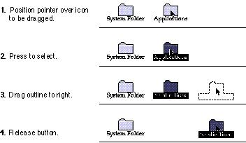

|
DraggingDragging means pressing the mouse button, moving the mouse to a new position, and then releasing the mouse button. Dragging can have different effects depending on what's under the pointer when the mouse button is pressed. The uses of dragging include selecting blocks of text, choosing a menu item, selecting a range of objects, moving an icon or other object from one place to another, and shrinking or expanding an object.Graphic objects can be moved by dragging. The
application either moves the entire object or attaches a
dotted outline of the object to the pointer and moves the
outline as the user moves the pointer. When the user
releases Figure 10-7 Dragging to move an object  Your application can restrict an object from being moved
past certain boundaries, such as the edges of a window. If
the user moves the pointer outside the boundaries, the
application stops drawing the dotted outline |